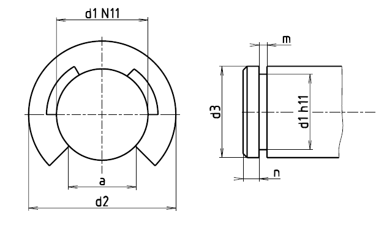

Příklad označení poniklovaného ocelového pojistného třmenového kroužku pro průměr čepu d3 = 7 až 8 mm:
POJISTNÝ KROUŽEK ČSN 02 2929.07 – 6
| Průměr čepu d3 |
d1N11 |
+0,5 m 0 | nmin |
aH10 |
d2H13 |
s |
Hmotnost [g] | |
|---|---|---|---|---|---|---|---|---|
| ocel | bronz | |||||||
| 2,2 až 2,8 | 1,9 | 0,55 | 1 | 1,6 | 4,5 | 0,5 ±0,035 | 0,03 | 0,04 |
| 2,8 až 3,9 | 2,3 | 0,55 | 1 | 1,9 | 6 | 0,5 ±0,035 | 0,05 | 0,06 |
| 3,9 až 4,8 | 3,2 | 0,55 | 1 | 2,7 | 7 | 0,5 ±0,035 | 0,07 | 0,08 |
| 4,8 až 6 | 4 | 0,85 | 1,2 | 3,3 | 9 | 0,8 ±0,035 | 0,18 | 0,2 |
| 6 až 7 | 5 | 0,85 | 1,2 | 4,2 | 11 | 0,8 ±0,035 | 0,28 | 0,31 |
| 7 až 8 | 6 | 0,85 | 1,2 | 5 | 12 | 0,8 ±0,035 | 0,3 | 0,33 |
| 8 až 10,2 | 7 | 1,1 | 1,6 | 5,9 | 14 | 1 ±0,05 | 0,48 | 0,54 |
| 10,2 až 13,4 | 9 | 1,1 | 2 | 7,6 | 18,5 | 1 ±0,05 | 0,83 | 0,93 |
| 13,4 až 16,5 | 12 | 1,6 | 2,5 | 10,1 | 23 | 1,5 ±0,05 | 1,77 | 1,98 |
| 16,5 až 20,6 | 15 | 1,6 | 3 | 12,6 | 29 | 1,5 ±0,08 | 2,85 | 3,19 |
| 20,6 až 25 | 19 | 2,1 | 4 | 16 | 37 | 2 ±0,08 | 6,6 | 7,4 |
POZNÁMKY
První doplňková číslice označuje materiál kroužku:
0 … ocel 12 071,
1 … ocel 14 260,
4 … bronz CuSn 6.
Druhá doplňková číslice označuje povrchovou úpravu:
0 … černěno v oleji,
2 … černěno alkalicky,
3 … fosfátováno,
5 … zinkováno, chromátováno,
6 … mosazeno,
7 … niklováno,
8 … chromováno,
9 … zvlášt. předpis.
Tvrdost kroužků:
ocelové 450-520 HV po tepelném zpracování,
bronzové 160-200 HV.